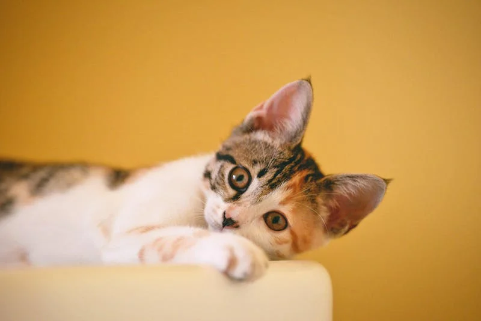
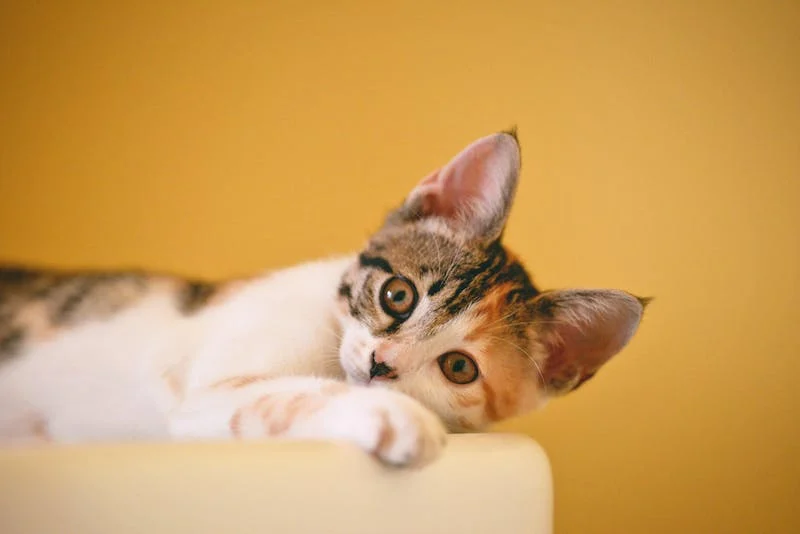

Välkommen till vår kattsida
Här kan du upptäcka spännande fakta om katter och deras beteende. Utforska våra artiklar och bilder och lär dig mer om dessa underbara varelser.
Om du älskar katter lika mycket som vi gör, varför inte gå med i vår kattklubb? Klicka på knappen nedan för att bli medlem!

Våra Katter
Här kan du läsa om några av våra underbara katter och deras personligheter. Kolla in bilder på dem nedan.

Kattbilder
Kolla in några söta kattbilder här. Du kan lägga till fler bilder nedan.
 



Om Oss
Lite information om vår kattklubb och vår kärlek till katter.
Vi är en grupp kattälskare som älskar att dela vår passion för katter med andra. Vår kattklubb har funnits i flera år och vi är engagerade i att hjälpa katter och främja kattvård.
Kontakt
Kontakta oss om du har frågor eller förslag. Vi älskar att höra från våra besökare.
Du kan nå oss på följande e-postadress: kontakt@kattsidan.se